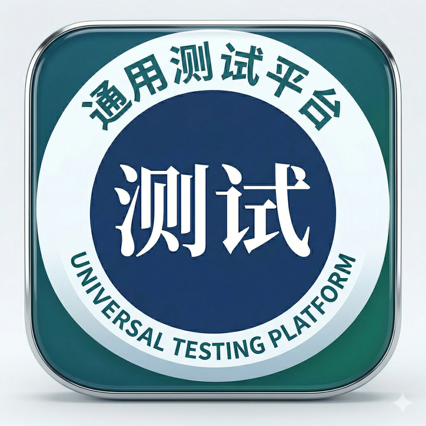

GUI
主窗口承接产品、工位、检测、日志和结果视图，并把用户动作交给控制器。
gui/main_window.py

碳基人的工作Universal Automation Test Platform
我正在建设一套公司级通用测试平台：用配置包描述产品，用插件接入设备与测试步骤，用运行时统一调度工位、记录结果、定位异常。
Problem
新产品导入慢：过去需要复制业务代码，现在优先复制产品配置包并通过配置中心完成资源、流程、治具和输出配置。
设备接口不统一：串口、USB、SSH、ATE 编程器、网关和仿真资源都走统一资源插件契约。
现场异常难定位：运行结果、步骤明细、日志、事件、MQTT 输出和调试 trace 通过 run_uuid 串起来。
Architecture
主窗口承接产品、工位、检测、日志和结果视图，并把用户动作交给控制器。
gui/main_window.py
管理工位级状态机、初始化、停止请求、单步调试和多 DUT 运行。
core/main_scheduler.py
加载产品配置包，装配资源、步骤插件、治具控制和监听器。
core/opentap_runtime.py
把步骤事件和 run summary 写入日志、SQLite、MQTT 与可导出的诊断数据。
listeners.yaml
bench.yaml、test_plan.yaml、fixture_settings.yaml、listeners.yaml 是每个产品的运行边界，代码只提供通用能力。
通用命令、串口帧、RSSI 扫描、远程 MAC 写入、UID 加密、等待和轮询都封装为可复用测试步骤。
资源插件实现 Instrument / DUT 契约，传输层覆盖 serial、USB、SSH、HID、simulation 等路径。
产品导入、工位资源、测试流程、结果上报和高级 YAML 都进入同一个配置工作台。
run_uuid 绑定产品、profile、工位、UID/MAC/order_no、步骤 detail、measurements 和 summary_json。
preflight、readiness、debug workspace、event bus 和日志会话让现场问题可以被复盘，而不是靠截图和口头描述。
Product Bundle
产品差异放进 bundle，设备能力放进 resource plugin，测试动作放进 step plugin，输出策略放进 listener。这样一个新产品可以复用同一套平台底座，只替换配置和少量通用插件。
配置中心再把这些 YAML 背后的结构转成工程师能操作的页面，降低现场维护成本。
Deliverables
主窗口、配置中心、系统托盘、预检、权限、调试窗口、拓扑视图和工位状态统一到同一个作业体验里。
ZM24、ZSB101A、ZM3562、ZM8620、ZM9241 等产品按四件套配置进入活跃工作区。
USB 测试板、串口 DUT、SSH DUT、ATE 编程器、ZLG MAC 网关和加密器都有插件化接入路径。
运行摘要、步骤明细、结构化 measurements、summary_json 和现场导出能力逐步形成质量追溯链路。
Roadmap
Working Style
我关注的不只是功能跑通，而是新产品能否更快导入，设备能否统一接入，失败结果能否被复盘，现场异常能否被准确定位。